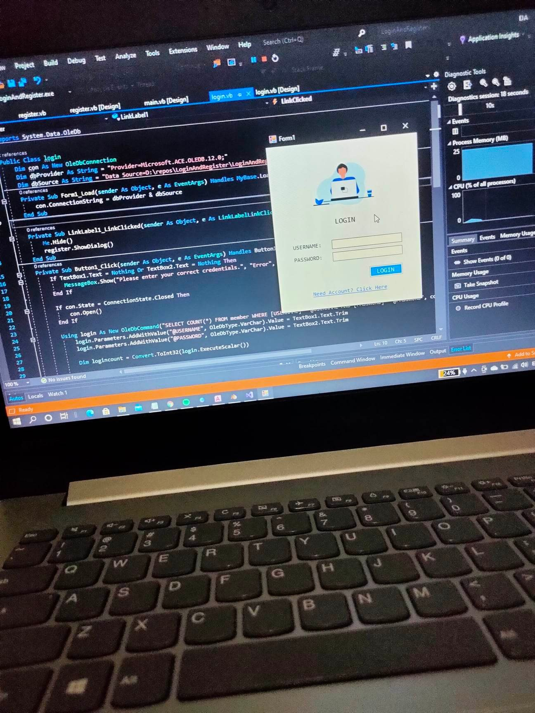
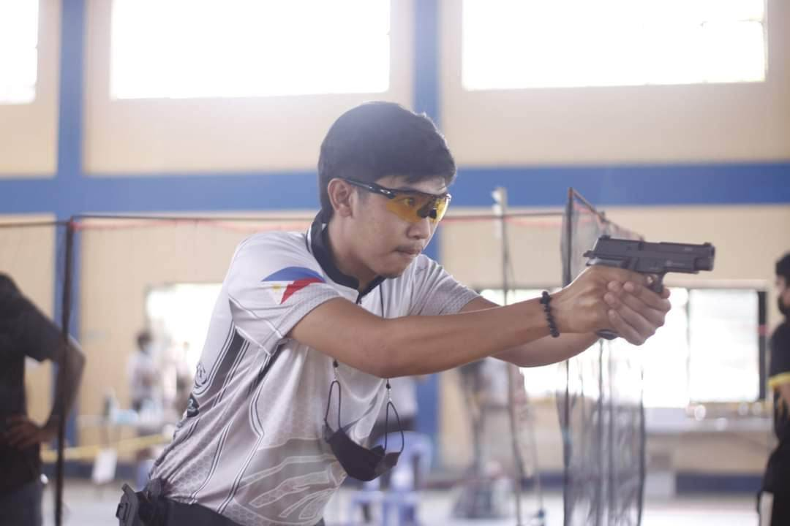
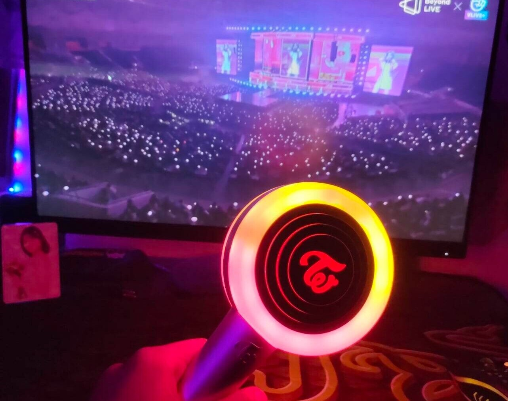
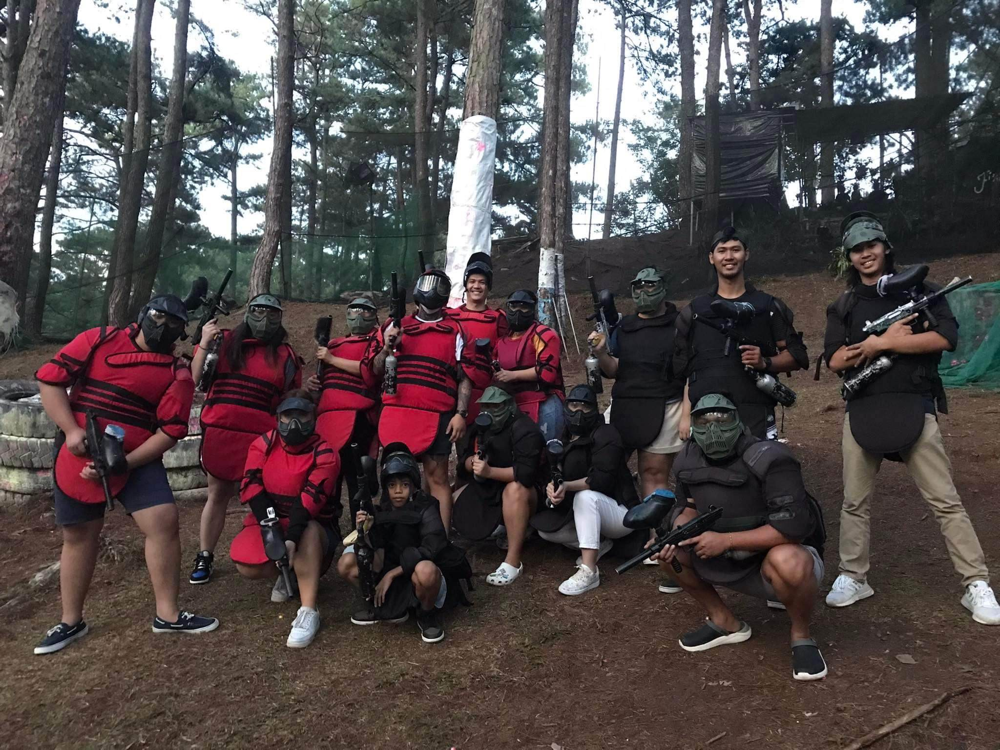
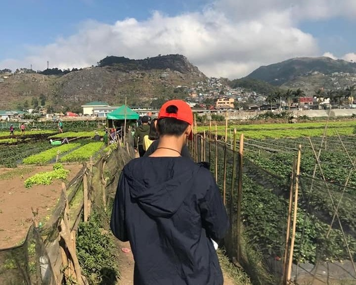

The Way My Curiosity Defines Myself and My Desires
By Andal, Denver Nicholo M.


SKILLS
Like everyone, I was also forced from childhood to learn skills1. With that said, what skill you should learn and develop is mostly directed by the conditions and the environment around you2. Now comes skills, one of my skills is in getting the conversation started, I am somehow very comfortable while talking to new people around me3. I easily get them to talk to me4. Like questioning where they are from and all the basic conversation starters5. In team skills, It applies through activities or sports related6. Social skills, being able to mix well with different people around me7. I also discover my driving skills when I was 13 years old8. My father and brother teach me how to drive a motorcycle9. And then when I was 15 years old they also teach me how to drive 4 wheels10. These are most of my skills so far11.


GO to TOP
HOBBIES
A hobby is something that people love to do in their free time1. My hobbies differ from place to place2. From the age of 10-12, I always play football in our school3. Also, we join to intramural sports to compete with other schools4. Then in the middle of my high school days, one of my hobbies is playing table tennis5. Like in my elementary days, I also join the provincial meet and compete with other provinces6. And now, It might sound strange for most people, but one of my hobbies is collecting kpop merchandise7. And also listening to music, I listen to music whenever my emotion changes8. Music is just a special sound that helps in enjoying every situation9. I listen to music when I am happy, to enjoy my happy moment10. Playing table tennis, Basketball, playing guitar, biking, playing online games, and etc11.


GO to TOP
INTEREST
You do something and you feel a great thrill is something you are interested in most1. Many people do things that they really don’t like but they do because of their condition2. You need to observe your routine and you may find a few things which do with the highest passion and dedication because it’s your real interest3. I have a lot of interests in life, when I was a kid, I always want new toys from toy kingdom4. But now, in my college days, I am interested in road trips with friends, making the day more special with them5. But, the best of the best is bonding with my family and relatives6. There are so many I want to do in life7. There is have achievements in life that I want, one is to graduate with a degree8. To do that I must have to pass all the subjects9. Also, I am interested to have a job that I want to do the entire of my life10. And now what interests me the most is teaching me something that I don't know11.
  
GO to TOP